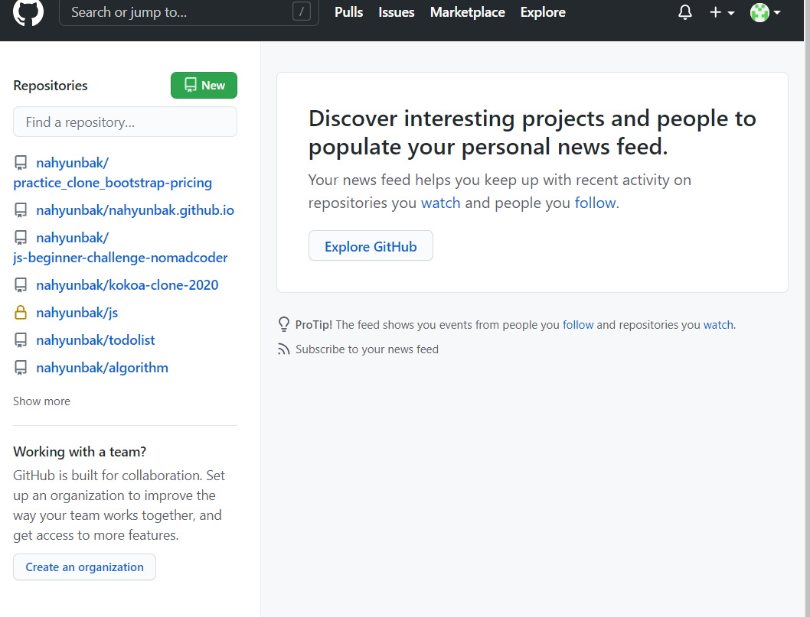

목차
깃허브 관리
CSSbranch
flexbox
카카오 클론
과제
깃허브 관리
- 깃이란?
git은 파일을 주시하면서 관리해주는 도구
github는 git의 변경내역을 볼 수 있는 사이트
장점:
1)유지보수 가능함
2)저장시점으로 돌려줌
git다운: https://git-scm.com/
- 깃허브 개념잡기
(로그인 시 보이는 화면)

(깃허브 히스토리)
--repository 클릭 후
(깃허브 커밋들)
**commit이란 저장하고 싶은 시점을 의미
(레포지토리)
생성방식1: 컴퓨터에 폴더 생성> 폴더를 github에 올림
생성방식2: github 내에 레포지토리 생성>컴퓨터로 복붙( 추천 )
- 깃허브 관리하기
1단계: 웹사이트 접속
2단계: new repository(깃허브) 생성
(초록색 new버튼을 누른다)

(필요한 정보를 적는다)

*Owner: 주인 계정 선택
*Repository name: 빈칸없이 '-'을 사용함
*Description: 간단한 설명 적기
*public or private: 되도록 public 선택
*Initialize~: 선택 x
3단계: github 데스크탑 설치or 실행
(다운 후 로그인까지 하기)
(시작화면)

4단계: file-clone repository-(클론할 레포지토리 선택하기)-(choose)-(경로 지정 후 레포지토리 선택)-컴퓨터에도 레포지토리 생성!
(클론할 레포지토리 선택하기)

(choose)

*바탕화면 혹은 document로 위치 설정하기
(경로 지정 후 레포지토리 선택)

생성!
5단계: 작업하기
(비쥬얼스튜디오 코드에 폴더 추가하기) -(README.md 파일 등 작업물 추가하기)
(비쥬얼스튜디오 코드에 폴더 추가하기)

(README.md 파일 추가하기)

(문법 지켜서 쓰기)

*여기에 작업물 이미지를 추가해 준다.(깃허브에서)
**이 단계는 사실 깃허브에서 이뤄져도 노상관이긴 하지만 동기화 테스트용으로 좋다.
6단계: 커밋하기
(작업확인)-(제목 및 description 쓰기)-커밋버튼 누르기
(작업확인)

(제목 및 description 쓰기)

(파란 버튼 -publich branch 누르기)

(결과물)

7단계: 수정하기
(vsc에서 파일 수정하기)-저장하기-(github데스크탑에서 확인)-(커밋하기)-(push origin 클릭)
(vsc에서 파일 수정하기)

(github데스크탑에서 확인)

(커밋하기)

*밑에서 취소할 수도 있다.
*committed just now: 깃은 업데이트 된 걸 알지만, 깃허브는 모른다.
(push origin 클릭)

8단계: .git ignore
커밋하고 싶지 않은 파일이나 폴더 리스트를 적어둔 파일

branch
<인강 정리>
- 브랜치란?
코드의 평행세계


*master가 받아들일지 결정한다.
(branch-merge into this branch)
d
publishing
<인강 정리>
- 깃허브로 static 호스팅할 수 있다.
..브랜치를 갖고 있다면!
*static 호스팅이란?단, 프론트엔드 파트(html, css, js)만 가능하다.
- 방법
1단계: gh-pages 라는 branch를 만든다.

2단계: 깃허브 가서 view 누르면 됨.
깃허브 수정하기
<인강 정리>
- 깃허브로 static 호스팅할 수 있다.
..브랜치를 갖고 있다면!
*static 호스팅이란?단, 프론트엔드 파트(html, css, js)만 가능하다.
- 방법
1단계: master branch에서 업데이트 한다.
2단계: gh page 브랜치로 가서,branch-update from master
3단계: push origin
4단계: 업데이트 됨.